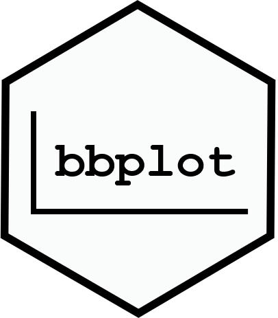

bbplot extends base R plotting for bbs.
It is a set of functions written to provide additional flexibility and power to R graphics written using the base R plotting functionality provided by the graphics and grDevices packages loaded by default with R.
The code is designed to specifically mimic the base plotting functions in API (e.g., have the same variable inputs named the same and in the same order) as well as in function-level syntax.
We follow the painters model of R graphics, where output production occurs in steps that are placed with subsequent steps being layered on top of earlier steps. We seek to extend the classical painter model to allow for removal of earlier steps, although this is not yet implemented.
A formal written definition of the code and design asthetics is forthcoming.
Status: Experimental, Active Development
The bbplot package is currently being actively developed, and is an early stage of package construction from disparate function code.